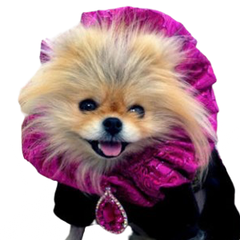
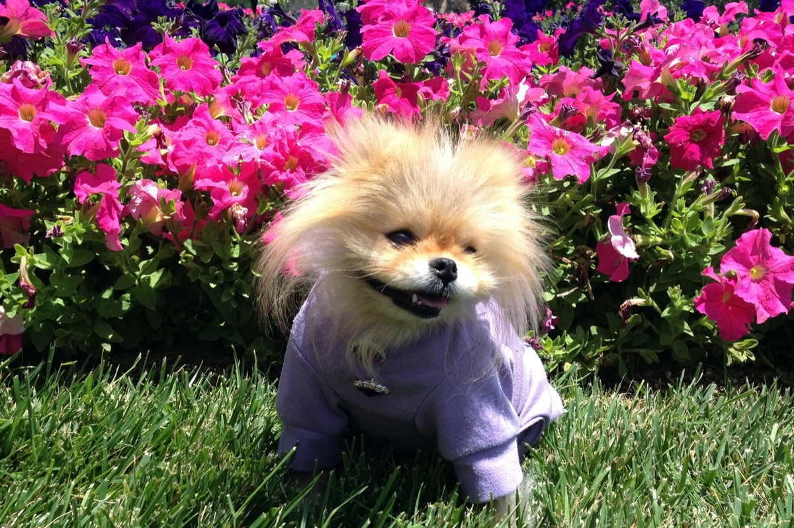

He arrived in season one wearing a bow tie and stayed for nine of them. Velvet for the red carpet, silk for the afternoon, sequins whenever the occasion asked — the best-dressed presence on Beverly Hills television.
“Tum Ti Tum Tum.”Signed, every tweet

A Pomeranian arrives at Villa Rosa and is named, with no irony whatsoever, Gigolo.
He appears in the first season of The Real Housewives of Beverly Hills and never really leaves. He is carried far more often than he walks.
Best dog in a reality series — an award he shares that year with the pit bull from Pit Boss. He accepts, as ever, in formalwear.
A second series, a second staff to ignore. His Twitter following passes sixty thousand.
Lisa Vanderpump and Ken Todd found a dog rescue in his shadow; the West Hollywood centre opens the following spring. Thousands of dogs follow him out of it.
After years of careful, round-the-clock keeping — the allergies, the heart — Giggy dies at home. “My heart is broken,” his owner writes.
There’s more portraits of Giggy, paintings and photographs, than there’s ever been of me.
Giggy had alopecia, an autoimmune condition that cost him his coat. Knitwear was not a bit — it was insulation. That the most photographed dog in Beverly Hills was also the one who needed the most looking after is, in the end, the whole story.
The foundation his family built in his name, Vanderpump Dogs, has rehomed dogs by the thousand. Not a bad legacy for a dog who owned more bow ties than he had good years.